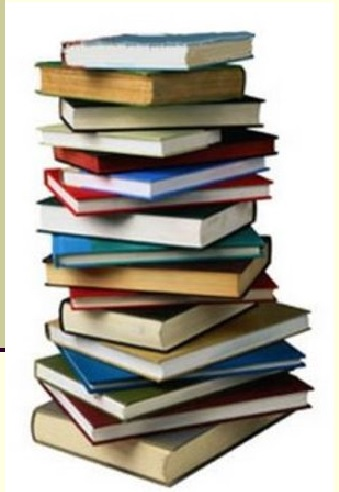

|
|

|
- Знаменитые музеи-усадьбы России / сост. И. С. Ненарокомова. – Москва :
АСТ-Пресс, 2010. – 383 с. : ил. – ISBN 978-5-462-00997-6.
- Мир и война : очерки из истории рус. сов. драматургии 1946–1980 гг. / РАН,
Гос. ин-т искусствознания ; отв. ред. И. Л. Вишневская. – Москва : Ленанд,
2009. – 287 с. – ISBN 978-5-9710-0237-6.
- Work and Family : Policies for a Changing Work Force. – Washington : Nat.
Acad. Press, 1991. – 260 p. – ISBN 0-309-04277-1.
- Толстой, А. Н. Золотой ключик, или Приключения Буратино / А. Н. Толстой.
Побежденный Карабас / Е. Я. Данько. Три толстяка / Ю. К. Олеша.
Приключения маленького актера ; Дом с волшебными окнами / Э. М. Эмден.
– Москва : Правда, 1991. – 542 с.
- Кнебель, М. О. Поэзия педагогики ; О действенном анализе пьесы и роли :
учеб. пособие / М. О. Кнебель ; Рос. акад. театр. искусства. – Москва : Изд-во
ГИТИС, 2010. – 422 с. – ISBN 978-5-91328-067-1.
www.wikipedia.ru
|